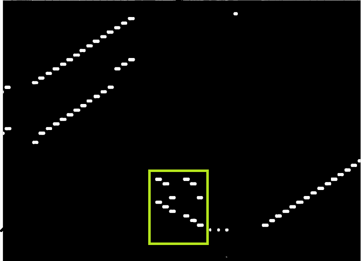
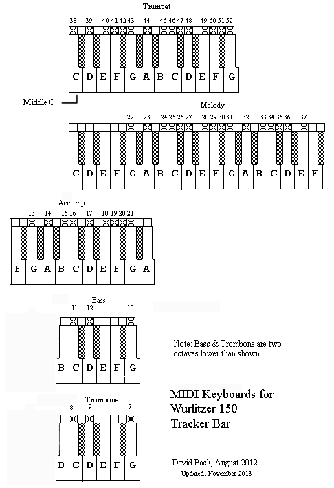

- Index
- Technical Articles
- Wurlitzer 150 Tracker Bar
Wurlitzer Band Organ 150 Tracker Bar Details
Author: David Back August 2012, updated November 2013
As there appears to be no detailed information on the Wurlitzer 150 Band Organ Tracker Bar available
I have collected this information from various sources and hereby publish it.
If you can see any errors or have any comments to make please contact the e-mail address in "About"
PLAYER SYSTEM:
medium: Wurlitzer style 150 punched paper roll, paper punch dia. 0.07 inches (1.778mm)
transport: paper is pulled by take-up spool, at constant revolutions per minute
frame: typically Wurlitzer Long Roll Tracker Frame (10-tune roll)
initial paper speed: typical 8.3 feet per minute, adjustable
reader: pneumatic, suction, square hole 1.75mm X 1.75mm
width of paper: 7.00 inches
take-up spool diameter: 3.0 inches
supply spool core: 2.00 inches inside diam., 2.25 inches outside diam.
channel spacing: 0.1227 inch per key (standard Wurlitzer band organ hole spacing)
symmetrical about centerline.
total quantity of possible channels: 54
Divisions
3 bass notes
3 trombone notes
9 accompaniment notes
16 melody notes
15 trumpet notes
2 percussion
6 channel controls
----
54
Tracker Bar Assignments
1 - Swell shutters open
2 - Bells on
3 - Piccolo and melody violin pipes on
4 - All off (registers cancel)
5 - Coin trip (optional motor shut-off, after each song)
6 - Percussion Snare drum
7 - Trombone G midi 43 (20 August 2012 and 28 October 2013 emails from Bill Klinger
8 - Trombone C midi 36 Trombone and bass corrected again.)
9 - Trombone D midi 38
10 - Bass G midi 43
11 - Bass C midi 36
12 - Bass D midi 38
Notes: 02 November 2013
I have checked the harmonising between the melody and bass for Bill Klingers Trombone and Bass scheme above (using "w150 roll 13147-05 Circus Life") and found that, in my opinion, they harmonise well, better than the older scheme.This scheme is compatible with all w150 organs, observe that the notes are out of order on the tracker. This lines up with the Wurlitzer 150 test/tuning roll which plays these notes out of order whilst playing all others in order. See picture of Trombone and Bass tuning tracks in the yellow rectangle below, they are octavely related and tuned to the Accompaniment.

The bass and trombone tracks in the available batch26's w150 rolls are pitched too high; comparable with the w125. Because of this they are not directly compatible with w150 organs.
I would like to see an original Wurlitzer w150 printed tuning sheet. If somebody has one please contact me at the email address above.
13 - Accompaniment G (span: midi keys 55-67)
14 - Accompaniment A
15 - Accompaniment B
16 - Accompaniment C
17 - Accompaniment D
18 - Accompaniment E
19 - Accompaniment F
20 - Accompaniment F#
21 - Accompaniment G
22 - Melody G (span: midi keys 67-88)
23 - Melody A
24 - Melody B
25 - Melody C
26 - Melody C#
27 - Melody D
28 - Melody E
29 - Melody F
30 - Melody F#
31 - Melody G
32 - Melody A
33 - Melody B
34 - Melody C
35 - Melody C#
36 - Melody D
37 - Melody E
38 - Trumpet C (span: midi keys 60-79)
39 - Trumpet D
40 - Trumpet E
41 - Trumpet F
42 - Trumpet F#
43 - Trumpet G
44 - Trumpet A
45 - Trumpet B
46 - Trumpet C
47 - Trumpet C#
48 - Trumpet D
49 - Trumpet E
50 - Trumpet F
51 - Trumpet F#
52 - Trumpet G
53 - Percussion Bass drum and cymbal
54 - Rewind (appears only at the end of roll)
TIME DELAYS
Bass drum: delay = 85 millisecond (msec) from key "on",
duration 106 msec typ.
Snare drum: delay = 37 msec from key "on",
charging duration 50 msec typical.
